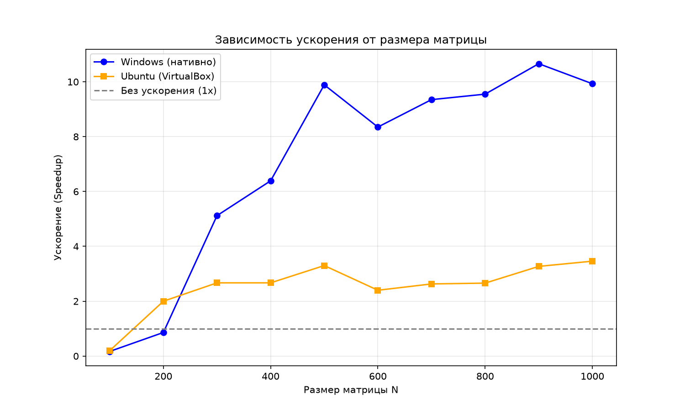

Изучение основ параллельного программирования на примере задачи перемножения квадратных матриц. Освоение технологии OpenMP для распараллеливания вычислительных алгоритмов.
Даны две квадратные матрицы A и B размерности N×N. Необходимо:
Формула умножения матриц:
C[i][j] = Σ (k=0..N-1) A[i][k] * B[k][j]Сложность алгоритма — O(N³). Параллелизация выполняется через #pragma omp parallel for — внешний цикл по i распределяется между потоками. Каждый поток считает свою часть строк результата, поэтому гонок данных не возникает.
#pragma omp parallel for
for (int i = 0; i < n; i++) {
for (int j = 0; j < n; j++) {
for (int k = 0; k < n; k++) {
C[i][j] += A[i][k] * B[k][j];
}
}
}Полный код: cpp/main.cpp, верификатор: python/verify.py.
| N | Последовательно, мс | Параллельно, мс | Ускорение |
|---|---|---|---|
| 100 | 4 | 24 | 0.17 |
| 200 | 25 | 29 | 0.86 |
| 300 | 87 | 17 | 5.12 |
| 400 | 211 | 33 | 6.39 |
| 500 | 445 | 45 | 9.89 |
| 600 | 760 | 91 | 8.35 |
| 700 | 1188 | 127 | 9.35 |
| 800 | 1710 | 179 | 9.55 |
| 900 | 2484 | 233 | 10.66 |
| 1000 | 3624 | 365 | 9.93 |
| N | Последовательно, мс | Параллельно, мс | Ускорение |
|---|---|---|---|
| 100 | <1 | 5 | — |
| 200 | 10 | 5 | 2.00 |
| 300 | 32 | 12 | 2.67 |
| 400 | 80 | 30 | 2.67 |
| 500 | 221 | 67 | 3.30 |
| 600 | 291 | 121 | 2.40 |
| 700 | 533 | 203 | 2.63 |
| 800 | 722 | 271 | 2.66 |
| 900 | 1342 | 410 | 3.27 |
| 1000 | 2087 | 603 | 3.46 |

При малых размерах матриц (N ≤ 200) параллельная версия работает медленнее последовательной или на том же уровне. Это объясняется накладными расходами на создание потоков OpenMP (5–20 мс), которые сопоставимы со временем самой задачи.
При увеличении N до 500+ ускорение достигает 9–10x на Windows и 3.5x на Ubuntu в VirtualBox. Разница объясняется тем, что виртуальная машина не имеет прямого доступа к физическим ядрам процессора — потоки OpenMP проходят через слой виртуализации, что снижает эффективность.
На малых N (100) параллелизм не окупается — это классический пример закона Амдала.
В ходе работы были реализованы последовательный и параллельный алгоритмы умножения матриц. Параллельная версия с OpenMP показала ускорение до 10x на Windows и до 3.5x на Ubuntu в VirtualBox. Экспериментально подтверждено, что параллелизм эффективен только при достаточном объёме вычислений (N ≥ 500). Верификация через NumPy подтвердила корректность результатов.